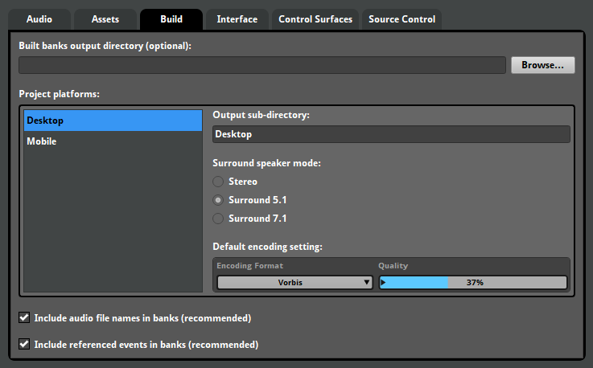
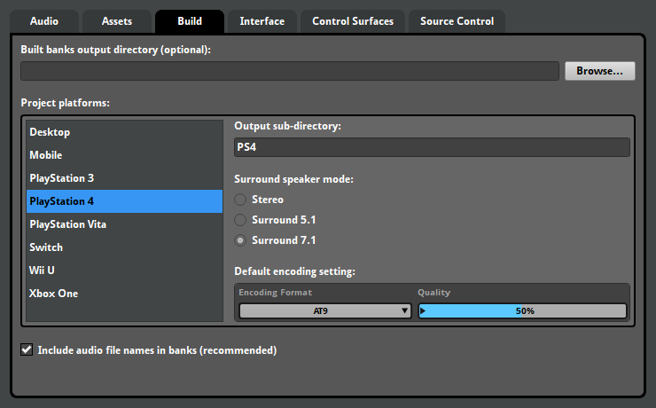
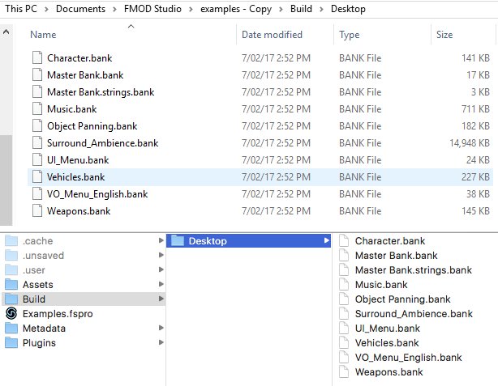
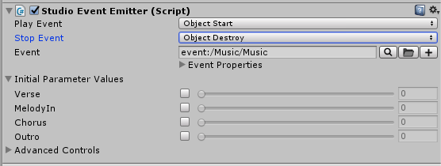
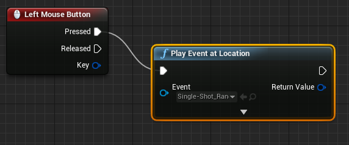

FMOD Studio User Manual 1.10
After gathering all your assets, creating your events, and adjusting your mixer settings, the next step is getting that content into your game. The process consists of assigning events to banks, building those banks, and then copying those built banks to your game.
There are several aspects to correctly building an FMOD Studio project that can impact its efficiency and overall functionality. Depending on the size and scope of your project some of these specifications may need to be planned early in development, and others can be applied when implementing your content.
FMOD Studio provides a variety of settings to ensure effective workflow and efficient performance for your game.
In order for content to be used in your it needs to be built into banks. Banks are collections of the metadata, assets, events and other content used in your project, to be built and used in your game. Your game's code calls banks and manipulates FMOD Studio events to produce sound.
FMOD Studio does not automatically assign any events to banks. If you run the build process without first assigning the project's events to banks, the resulting bank files will not include those events.
To assign events to a bank, you can either right click on an event in the events browser and choose "Assign to Bank...", or you can drag the event from the events browser into the banks browser and drop onto the bank of your choosing. Any event not assigned to a bank is tagged with #unassigned.
How you allocate events and set up your banks can significantly affect the performance and efficiency of your project. A bank needs to be loaded into memory before any events in that bank can be used. The amount of memory consumed by a bank depends on its content. There is otherwise no limit to the number of banks your project can include or to how many banks can be loaded into memory at a time.
By default all projects are created with a single master bank. You do not need to assign any events to the master bank, but it must be loaded at all times while your game runs. In small projects where only one bank is needed, assigning events to and loading only the master bank is a viable option.
You can view all banks and add more in the banks browser.
To create a new bank, right click in an empty space in the banks browser and choose "New Bank". You can also create folders by right clicking in an empty space in the banks browser and choosing "New Folder". All banks apart from the master bank can be moved into a folder.
Please note that placing banks into folders does not affect the build process - all banks are built into the same folder specified in the Build tab of the preferences dialog.
By default, referenced events and their sample data are automatically assigned to the same banks as each of the events by which they are referenced. This means that a referenced event does not need to be specifically assigned to a bank before building.
FMOD Studio has an option that stops referenced events from being automatically assigned to their parent events' banks. To enable this option, open the Preferences dialog and uncheck the "Include referenced events in banks" option in the "Build" tab.

Enabling this option means you have to manually assign each referenced event to a bank in order to use it in game. By assigning and building a commonly used referenced event to a specific bank, the referenced event and its sample data is only built into that bank and can be used by all events referencing it. This assists with reducing the file size of built banks.
Banks can contain two types of data: Sample data and metadata. Sample data is the encoded audio assets used by the events in a bank, while metadata is every other defining feature of those events.
Your game must load both the sample data and the metadata of an event to play instances of that event. For this reason, banks contain both metadata and sample data for each of the events assigned to them by default.
It is also possible to build the metadata and sample data into separate bank files. This produces two bank files for each bank in your project. Separate metadata and sample banks require slightly more resource overhead, but can also be updated independently, allowing you to patch your game's metadata banks without including the sample data banks in the download. To build your project's metadata and sample data into separate bank files, select the "Build metadata and assets to separate banks" option under "Built bank file separation" in the "Build" tab of the preferences dialog before building your project.
Some game engines additionally require that the sample data of streaming assets and non-streaming assets be in separate files. To build your project's metadata, streaming asset sample data and non-streaming asset sample data into separate bank files, select the "Build metadata, non-streaming assets, and streaming assets to separate banks" option under "Built bank file separation" in the "Build" tab of the preferences dialog before building your project.
All banks are built in binary format and are not human-readable, regardless of whether they contain metadata, sample data, or both.
Each platform has its own hardware and limitations to consider. For example, some consoles have a hardware audio decoder which will save on processing power, and the vast majority of handheld devices have no need for 7.1 surround sound speaker modes. FMOD Studio allows you to use one project to build to multiple platforms.
To add platforms to your builds list, right click into the "Project Platforms" list in the preferences dialog's "Build" tab and choose the appropriate platform from the "Add Platform" list.

You can add the same platform to the project platforms list multiple times to represent multiple hardware types. For example, you can have two Desktop platforms, naming one as "Windows" and one as "Mac", if needed.
You can specify how your assets are compressed and encoded when built into your banks. This affects file sizes, load times, and performance. Compression formats are set on a per platform basis and can be overridden on a per asset basis.
You can set the default encoding setting for a platform in the preferences window. Under the build tab, select the desired platform in the project platforms list, then select a default encoding setting. Some platforms support special encoding formats, such as AT9 and XMA. All encoding settings other than PCM involve compression.
Below is a table showing each platform available and their recommended encoders.
| Platform | Recommended Encoder | Reason for Recommendation |
|---|---|---|
| Desktop (Windows, Mac, Linux) |
Vorbis | Good all rounder, offers decent compression to quality ratio, recommended for all music files regardless of platform |
| PlayStation 4 | AT9 | PS4 has a hardware decoder and therefore utilizing it will save on CPU cycles |
| PlayStation 3 | Vorbis | Good all rounder, offers decent compression to quality ratio, recommended for all music files regardless of platform |
| PlayStation Vita | FADPCM, AT9 | As with the PS4, the PS Vita has a hardware decoder that can save CPU cycles, however there are a limited number of AT9 decoders and therefore FADPCM may be a better fit. It is recommended to use AT9 encoding for music |
| Xbox One Xbox 360 |
XMA | Xbox One and Xbox 360 have a hardware decoder and therefore utilizing it will save on CPU cycles |
| Nintendo Switch Wii U |
FADPCM | Lightweight codec which is good for the Switch and Wii U |
| Mobile (Android, iOS) |
FADPCM | Lightweight codec which is good for mobile devices |
The FADPCM and PCM encoding formats do not allow their compression amounts to be adjusted but do offer altering the sample rates from 48.0kHz to 4.0kHz. PCM is not recommended for most platforms, however it is still worth using for short sounds if FADPCM's cost is too high.
The AT9, XMA, and Vorbis encoding formats offer a "Quality" slider that allows you to control the amount of compression used when building. Please note that even though the quality slider represents quality in percentages, the actual compression ratio of some encoders will be fixed within a certain range. For example, AT9 encoding won't have any difference in compression ratio when the quality slider is set between 40% and 48%. You can see how FMOD Studio determines compression ratios below:
For information on how to override encoding settings on a per asset basis, please see the managing assets section.
The surround speaker mode and output sub-directory settings are also set on a per platform basis.
Once all the events have been assigned to the relevant banks and all build settings have been defined as needed, you can build the project. Building in FMOD Studio gathers all the metadata, events, audio tables (and their keys), and assets of your project and bundles them into easy-to-transfer bank files. These bank files are what your game engine reads to produce audio.
To build, select "Build..." or "Build All Platforms..." from the "File" menu. "Build..." only builds for the selected platform. "Build All Platforms..." builds banks for all the platforms in the project platforms list.
You can also right click on a bank in the bank browser and choose "Build..." from there. This will build only this bank to the selected platform.
The time it takes to build banks may vary, depending on their assets, target platforms, compression and encoding settings, and build cache.
If the "Build metadata and assets to a single bank" option is selected in the "Build" tab of the preferences dialog, every bank is built into a .bank file. Each .bank file contains the metadata and sample data for the events assigned to that bank.
If the "Build metadata and assets to separate banks" option is selected, every bank is built into a .bank file and an .assets.bank file. Each .bank file contains the metadata for the events assigned to that bank, and each .assets.bank file contains the sample data for the events assigned to that bank.
If the "Build metadata, non-streaming assets, and streaming assets to separate banks" option is selected, every bank is built into a .bank file, an .assets.bank file, and a .streams.bank file. Each .bank file contains the metadata for the events assigned to that bank, each .assets.bank file contains the non-streaming sample data for the events assigned to that bank, and each .streams.bank file contains the streaming sample data for the events assigned to that bank.
In addition, building the master bank produces a .strings.bank file that contains the name, path, and GUID of every event in the project. While a .strings.bank file is not compulsory for loading sounds into a game, it contains all of the paths for events in the project. Without it, you can only look up events via their GUIDs, which may not suit your workflow.

In the above screenshot, you can see each bank from the FMOD Studio example project is built into a .bank file, along with Master Bank.bank and a Master Bank.strings.bank file. Note that the Master Bank can be renamed and may therefore be named differently in some projects.
Bank files are what your game uses to produce audio. Once built, they no longer require FMOD Studio to function, and are ready to be added to your game.
By using the Unity integration, Unreal Engine 4 integration, or System::loadBankFile() API call your game will load the bank and give you access to all events assigned to that bank. After loading, you can play events assigned to that bank.
The master bank contains all the metadata, mixer, and routing data of your project. It must be loaded into memory at all times while your game runs.
You do not need to assign any events to the master bank.
After building the banks and loading them into your game, it is now time to play events.
When using the FMOD Studio Unity integration plugin, there are two ways to play events.
The first way is to add an FMOD Event Emitter component to a game object, choosing the event to play, and when to play it.

The second way is to use the FMOD Unity API to call events from code.
When using the FMOD Studio Unreal Engine 4 plugin, there are several ways to play events.
The first way is to drag and drop an event from the Content Browser into a scene Viewport.

The second way is to use the "Play Event at Location" function in Blueprints to trigger any given event.
See more information on both of these methods in our Unreal Engine 4 documentation.
The third way is to use the FMOD Unreal Engine 4 API to call events from code.
In order to play events through the FMOD Studio API, you will need to create an event instance and then instruct it to start.
system->getEvent("event:/UI/Cancel", &cancelDescription); cancelDescription->createInstance(&cancelInstance); cancelInstance->start(); cancelInstance->stop(FMOD_STUDIO_STOP_ALLOWFADEOUT);
For more information, please see our FMOD API Documentation.